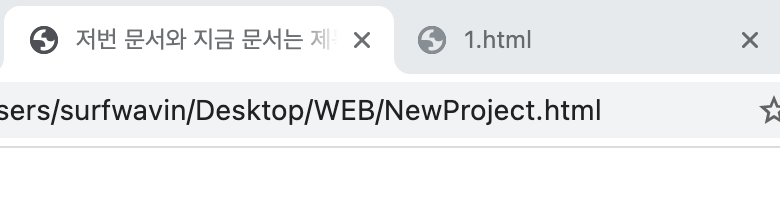
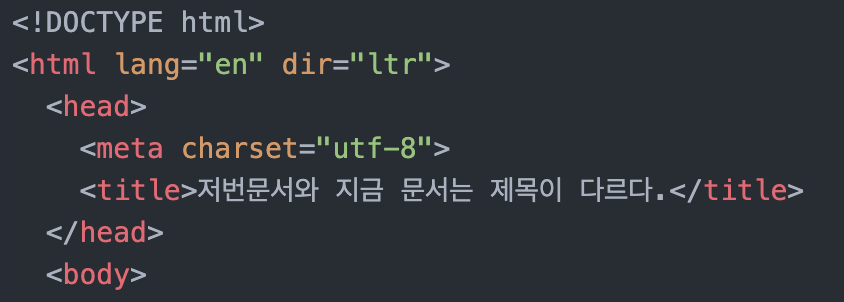
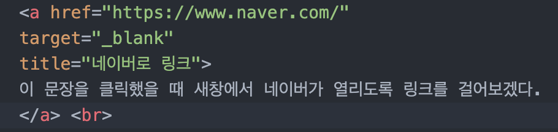

- 첫번째로 만든 페이지
- 두번째로 만든 페이지
- 세번째로 만든 페이지
- 네번째로 만든 페이지 - 비디오삽입하기, 댓글기능 삽입하기
11월 29일
title 입력하기, 저번 문서와 지금 문서는 제목이 다르다.
저번 문서와 지금 문서는 제목이 다르다.

저번문서는 파일명으로 기본 설정이 되어있지만, 지금 문서는 title태그를 이용하여 바꿈
그렇다면 왜 타이틀이 중요할까? 타이틀은 검색 노출도에 가장 기본이 되는 요소이기 때문이다.
한글이 깨질때는 utf-8규격을 입력하기 위해 meta 태그를 이용
char=character, set 이라는 뜻의 charset속성을 이용하여 utf-8규격을 입력한다.
웹페이지 작성시 전세계 공통적인 규격으로 이 웹페이지가 html을 기반으로 작성되었으며,
본문을 설명하는 속성=head와 본문=body를 시각적으로 명시하게 되어있다.

-> 요런식으로, 물론 안해도 되는것 같다. 하지만 오픈소스 공유와 정보 혁신을 위해서 정착
된 문화인듯.
이번에는 태그의 제왕 링크 삽입 ANCHOR에 대해서 알아보자
(p태그 다음에 h태그를 입력했더니 p태그를 닫지 않아도 되는걸 확인)
이 문장을 클릭했을 때 새창에서 네이버가 열리도록 링크를 걸어보겠다.
자동으로 밑줄이 쳐지면서...약간 글씨체가 커진것 같기도 하고^^

앵커의 약자인 a 속성으로는 hyper-reference의 약자인 href, target은 새창에서 열릴지 이
페이지에서 열릴지를 결정하는 속성이며, title은 마우스 오버레이시 보여지는 툴팁?이다.